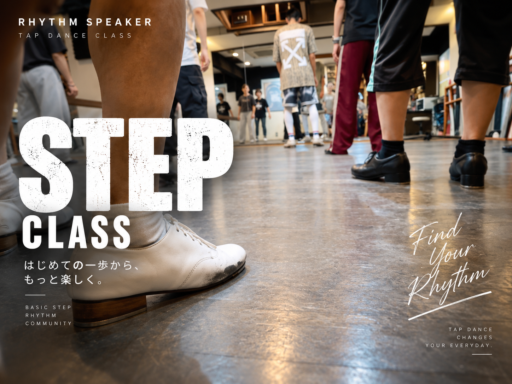
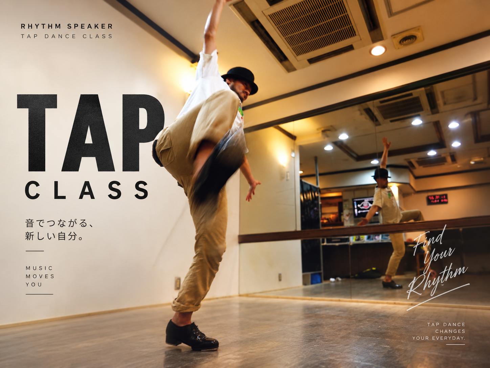
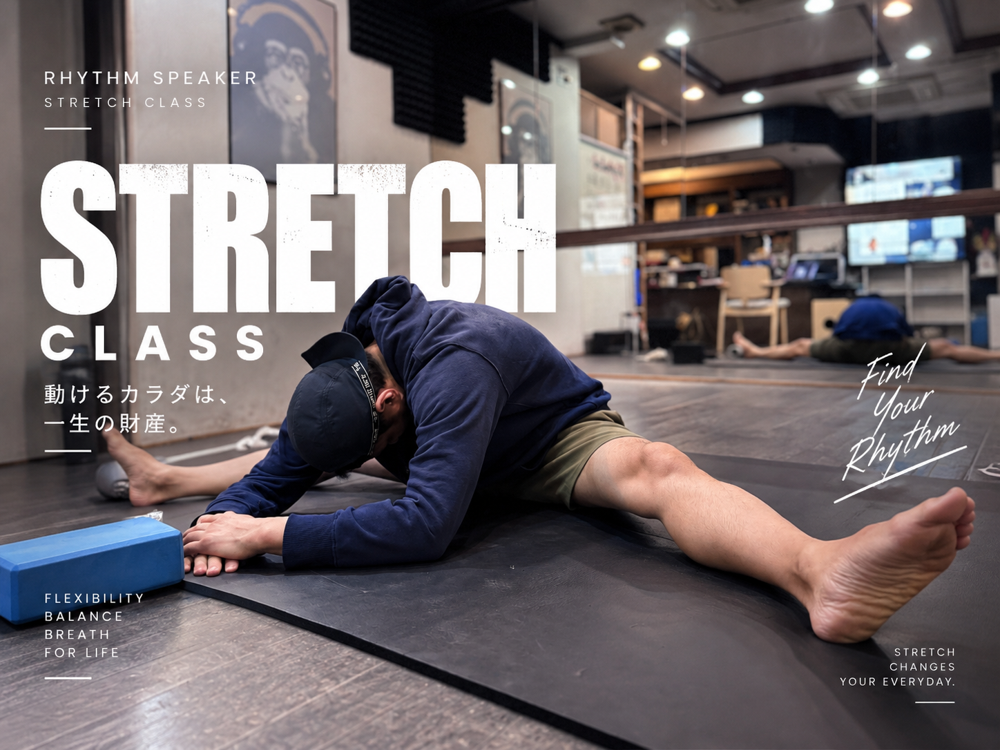
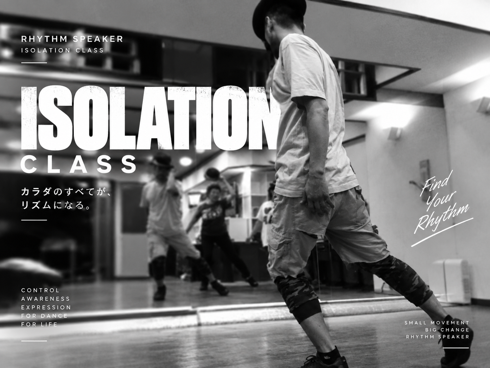
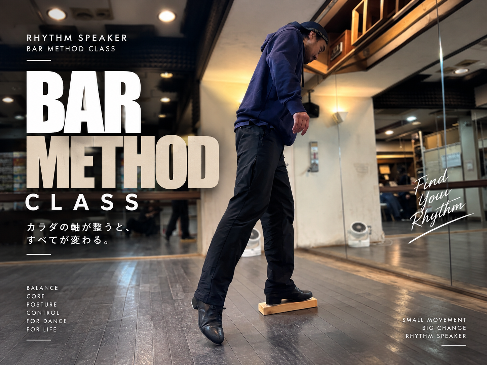
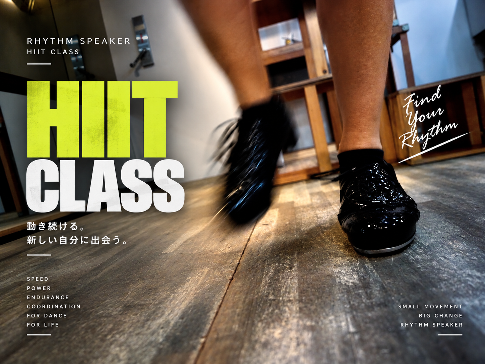

RHYTHM SPEAKER CLASS FINDER
やりたいことから、
クラスを選ぶ。
タップダンスの基礎・表現から、柔軟性、身体コントロール、軸、体力づくりまで。クラス名を覚える前に、今やりたいことから入口を選べます。
TAP DANCE
基礎を覚える。表現へ広げる。
最初はSTEPで共通基礎を積み上げ、その先はTAPで講師ごとの音楽性や表現へ広げられます。

FOUNDATIONSTEP CLASS
完全未経験の超初級🔰から、基本ステップを組み合わせる初級へ。担当講師が変わっても基礎がつながる共通カリキュラム。
超初級 🔰初級
MiFa-san / 本間茂樹 / さささ / 丹生良彬 / 奥平 / 古庄里好
STEPを見る
STYLE & EXPRESSIONTAP CLASS
STEPで学んだ基礎を使い、音楽・リズム・コンビネーション・振付・表現へ。講師ごとの違いも楽しむクラス。
音楽リズム表現
講師ごとにスタイルが変わります
TAPを見る+ ONE / BODY TRAINING
踊る身体を、別の角度から育てる。
柔軟性・身体コントロール・軸・体力づくり。目的に近いものから選べます。

FLEXIBILITYSTRETCH
前屈・開脚を入口に、柔軟性と身体のつながりを学ぶ。
MiFa-san / 古庄里好
詳細を見る →
BODY CONTROLISOLATION
身体の部位を意識し、分けて動かす感覚を育てる。
古庄里好
詳細を見る →
POSTURE & AXISBAR METHOD
軸・姿勢・身体の使い方へ意識を向ける。
古庄里好
詳細を見る →
CONDITIONINGHIIT TRAINING
動き続けるための体力づくりを支える。
丹生良彬 / 古庄里好
詳細を見る →CHOOSE YOUR WAY
クラスからでも、先生からでも選べます。
やりたい内容からクラスを選ぶ方法と、気になる先生から担当クラスを探す方法。どちらからでも、自分に合う入口を見つけられます。
先生から選ぶSTEP：基礎を順番に学ぶTAP：講師ごとのスタイルを楽しむ身体づくり：目的から選ぶ START HERE
迷ったら、やってみたいことだけ伝えてください。
経験の有無や目的をLINEで伝えていただければ、クラス選びを相談できます。